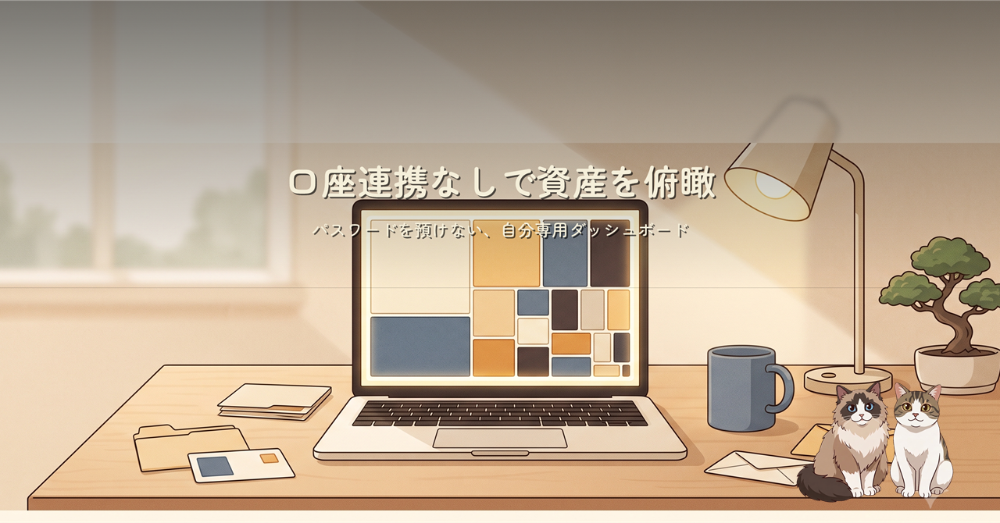
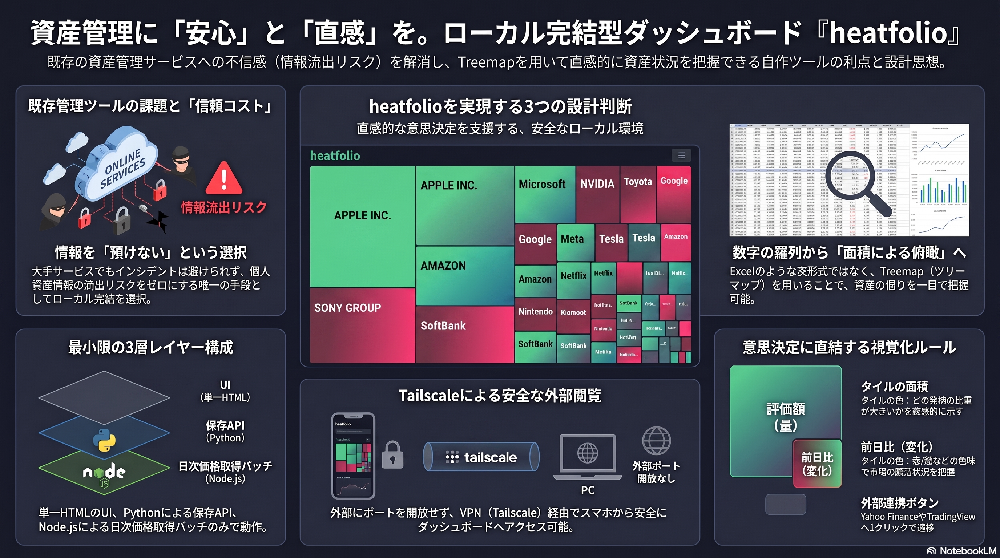
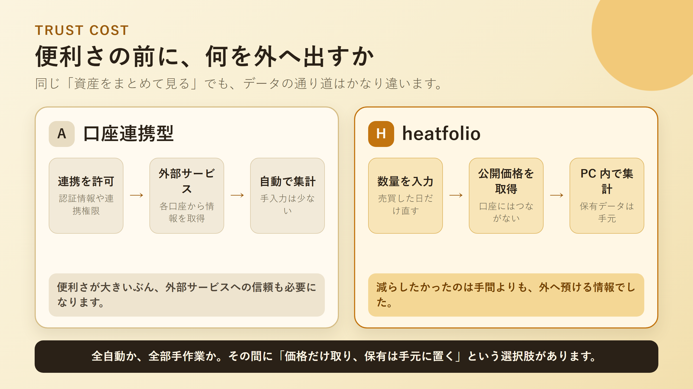
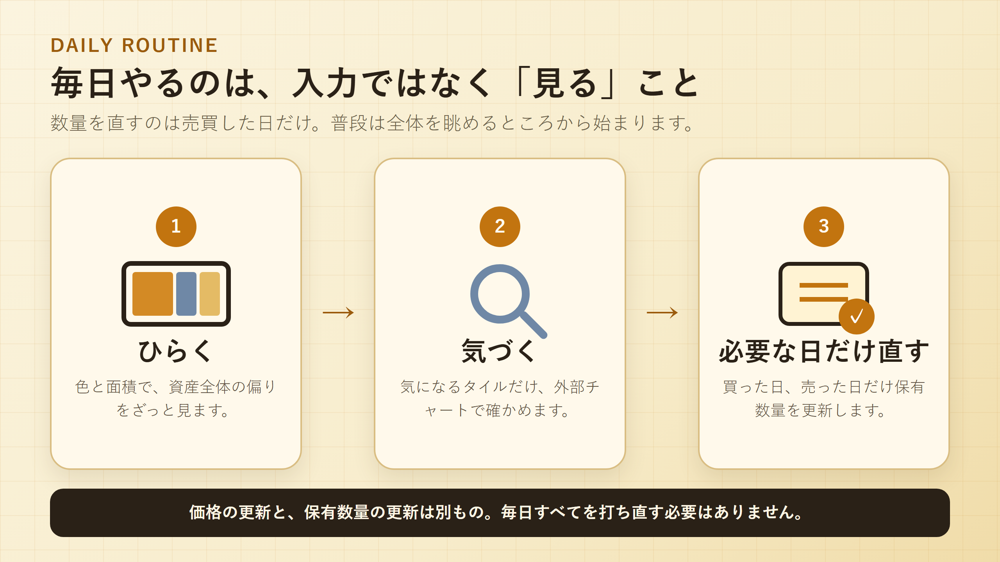

証券口座のIDやパスワードを外部サービスへ預けず、複数口座の保有資産を一枚で見渡したい。そんな中間解として作ったローカル完結ツールheatfolioを、Windowsでまず動かすところから紹介します。
heatfolioが外から取るのは公開価格です。保有数量は自分のPC内に置き、口座へつなぐための認証情報や連携権限を外へ渡しません。全自動ではありませんが、売買した日だけ数量を直せば普段の俯瞰には使えます。


動いたあとの日常運用は、画面をひらく、気になるタイルに気づく、売買した日だけ数量を直す。この3つです。毎日すべてを入力し直す台帳ではなく、毎日眺めるための画面として使います。
